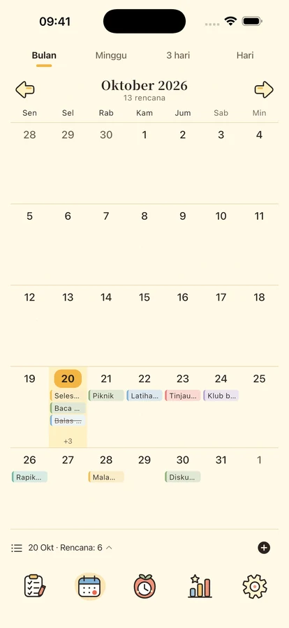
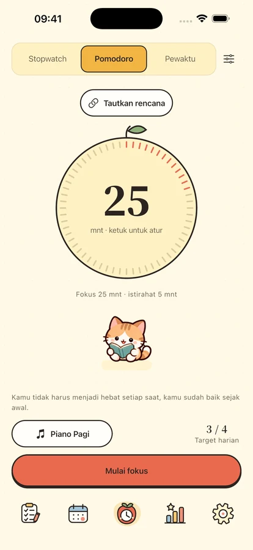
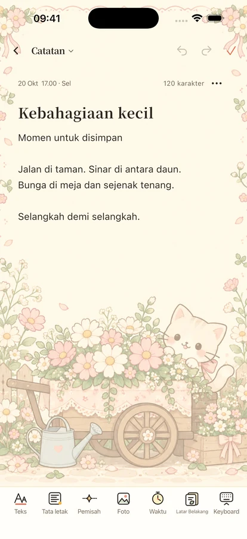

Sedikit fokus.
Teman yang hangat.
Rapikan rencana, fokus pada satu hal, dan simpan ide serta hari istimewa bersama teman kecil.
Untuk iPhone dan iPad · Bersiap rilis

Satu hal pada satu waktu.
Mulai dari langkah kecil
Ruang untuk rencana, waktu, dan sedikit semangat.

Tempat untuk setiap rencana.
Pisahkan penting dan mendesak lewat empat kuadran. Lihat hari, minggu, bulan melalui kalender dan linimasa, dengan pengulangan, subtugas, dan pengingat lokal.
Waktu untuk yang di depan mata.
Pomodoro, hitung mundur, atau stopwatch dengan 8 musik offline dan 11 suara suasana. Empat teman dan jam flip menemani fokus dan istirahat. Pustaka lengkap memerlukan Plus atau uji tiga hari; satu musik, satu suara suasana, dan hening tetap gratis.



Simpan ide dan hari berharga.
Memo berformat, foto, dan kertas, ditelusuri lewat tanggal atau kategori. Hitung hari menuju ulang tahun dan peringatan. Widget rencana, kalender, fokus, hari penting, dan memo memerlukan iOS 17 ke atas.
Keseharian Anda tetap milik Anda.
Fitur lokal tanpa masuk akun. Cadangan cloud dikirim manual dan analitik awalnya nonaktif. Ekspor isi, atur privasi, atau hapus akun sesuai pilihan Anda.
Privasi